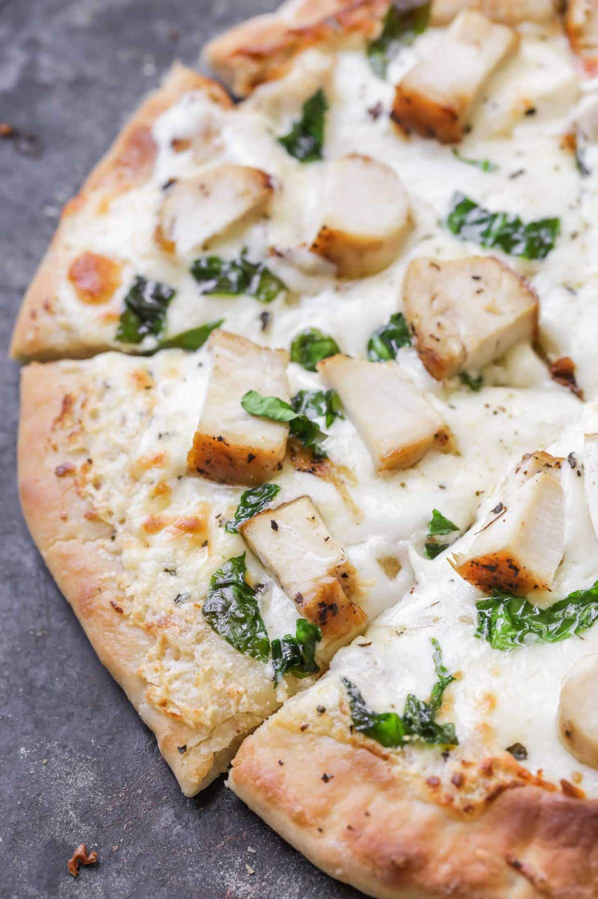

Veggie Pita Pizza Recipe

This recipe combines two of my favorites: Chicken Alfredo, and pizza! My husband even likes this, and he isn't fond of chicken!
Ingredients
- SAUCE
- 4 tablespoons butter
- ¼ teaspoon salt
- 1 dash ground black pepper
- 4 tablespoons all-purpose flour
- 1 cup milk
- ¾ cup grated Romano cheese
- GARLIC BUTTER
- 2 tablespoons butter
- 1 clove garlic, minced
- 1 pinch dried rosemary
- 1 pinch salt
Steps
- To Make Sauce: Melt butter in a small saucepan over medium heat. Blend in salt, pepper and flour, then stir in the milk and Romano cheese. Simmer, stirring constantly, until thickened. Remove from heat, cover and set aside.
- To Make the Garlic Butter: Melt the butter in a small saucepan over medium heat. Blend in the garlic, rosemary, and salt. Cook, stirring constantly, until garlic is tender but not browned. Remove from heat, cover and set aside.
- Preheat oven to 400 degrees F (200 degrees C). Season the roasted chicken with rosemary, thyme, poultry seasoning, garlic powder and salt. Chop or shred and reserve.
- To Assemble the Pizza: Spread dough out on prepared pizza stone. Top with cooled garlic butter, covering entire crust. Next spread with Alfredo Sauce (if necessary, warm to spreading consistency), leaving crust edges. Top with chicken, turning to coat with sauce.
- Bake in preheated oven for 20 minutes, or until bottom crust is lightly browned. Remove from oven and let set for 2 to 3 minutes before cutting.